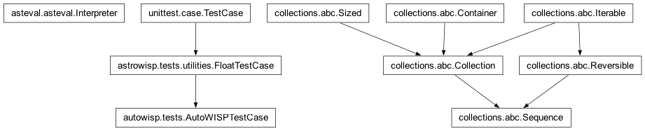
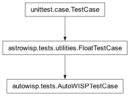

autowisp.tests package
Class Inheritance Diagram

Autowisp unit-test init.
- class autowisp.tests.AutoWISPTestCase(methodName='runTest')[source]
Bases:
FloatTestCase
Base class for AutoWISP tests.
- _test_failed()[source]
Whether this test has just failed or errored.
Read off the result rather than a flag the test sets, so nothing has to be remembered at the end of every test method. Two things make the obvious shortcuts wrong:
_outcome.successis still True here (it is reset per test part, andtearDownis its own part), andresult.errors/result.failuresaccumulate over the whole run – so the entries have to be matched against this test rather than merely counted.- Returns:
True if this test recorded a failure or an error.
- Return type:
- preserve_failed_processing = True
Set False by a test that does not want its processing directory kept even when it fails (nothing does at present). Failure is detected from the test result, so a passing test never has to say anything – the previous arrangement, where each test opted in by setting
successful_test, silently preserved the directory of every test that forgot to.
- preserve_processing_dir = None
- classmethod set_test_directory(test_dirname, processing_dirname, failed_test_dirname, preserve_processing_dir=None)[source]
Set the directory where data to test against is located.
- stage_catalog_cache = True
Submodules
- autowisp.tests.fits_test_case module
- autowisp.tests.get_test_data module
- autowisp.tests.h5_test_case module
- autowisp.tests.test_calibrate module
- autowisp.tests.test_create_lightcurves module
- autowisp.tests.test_detrending_stat module
- autowisp.tests.test_epd module
- autowisp.tests.test_find_stars module
- autowisp.tests.test_fit_magnitudes module
- autowisp.tests.test_fit_source_extracted_psf_map module
- autowisp.tests.test_fit_star_shape module
- autowisp.tests.test_measure_aperture_photometry module
- autowisp.tests.test_solve_astrometry module
- autowisp.tests.test_stack_to_master module
- autowisp.tests.test_tfa module